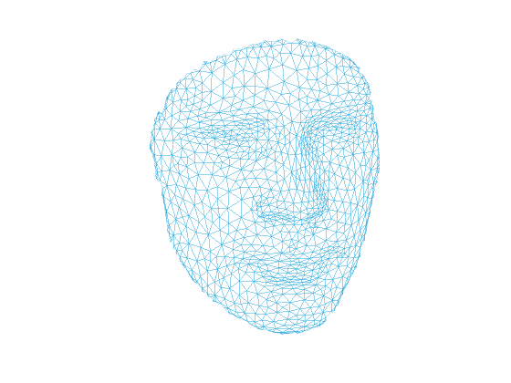
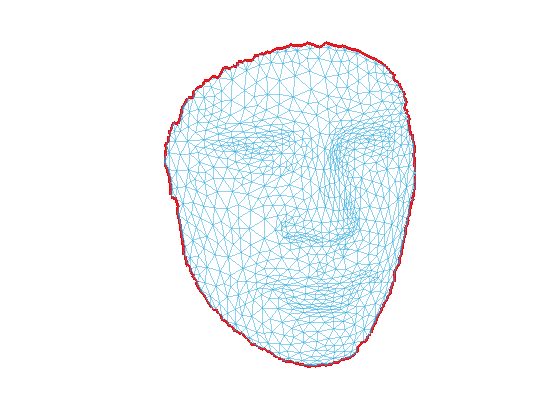
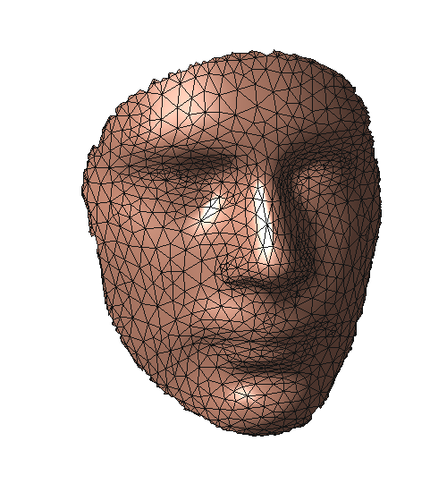
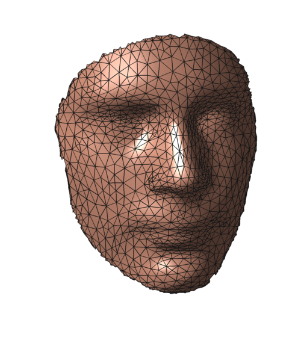

tutorial
This tutorial will bring you go through the package, show you its design principle and capbility.
Contents
preparation
First we get into the folder:
cd geometric-processing-package
startup will then add all folders in the packege to the top of search path and set output format
startup
read/write mesh
three mesh formats are supported: off, obj, ply
[face,vertex] = read_off('data/face.off'); % read off format mesh sf = size(face) % face is a nf x 3 array sv = size(vertex) % vertex is a nv x 3 array write_obj('data/face.obj',face,vertex) % write mesh to obj format
sf =
2000 3
sv =
1180 3
visualize mesh
we supply two visualizition functions:
plot_mesh(face,vertex) plot_path(face,vertex,path)
Both function uses pre-defined style to plot. You can easily specify your own style. More details please read help doc.
plot_mesh(face,vertex) % plot mesh axis off view(-90,-84) snapnow bd = compute_bd(face); % bd is the boundary plot_path(face,vertex,bd) % plot path (boundary) on mesh 
Advanced plotting. You can specify your own style.
figure('Position',[1 50 500 560],'Color',[1 1 1]); % set figure size and background color plot_mesh(face,vertex,... 'EdgeColor',[20 20 20]/255,... 'FaceColor',[251 175 147]/255,... 'LineWidth',0.5,... 'CDataMapping','scaled'); axis equal axis tight view(-90,-84) axis off colormap hsv lighting phong light('Position',[-1 1 -1],'Style','infinite');
To export high quality images, we recommend an excellent library export_fig. Export above figure with export_fig
export_fig face -png -transparent -nocrop

algebra and topology
This package provides various algebraic and topologic functions. Our goal is to provide "engough" fundamental functions such that users can develop their own applications based on (only) this package. Performance is always in our mind when developing this package. To achieve best performance, vectorized operation is employed whenever possible.
adjacency matrix is widely used. Nonzero element in am indicates a link (edge) of the mesh. Likewise, nonzero element in amd indicates a link (halfedge) of the mesh. Additionally, am(i,j) == 2 means that edge(i,j) is an interior edge, while am(i,j) == 1 means edge(i,j) is an boundary edge, since boundary edge appears only used by one face and interior edge shares by two faces. Since halfedge is unique, i.e., every halfedge belongs to a single face, we store this connection between halfedge and face in amd. That is, amd(i,j) = k means that halfedge(i,j) belongs to face k, or vice verse, face k has halfedge(i,j), or equivalently, face k has two vertex i and j and they are in ccw order.
[am,amd] = compute_adjacency_matrix(face);